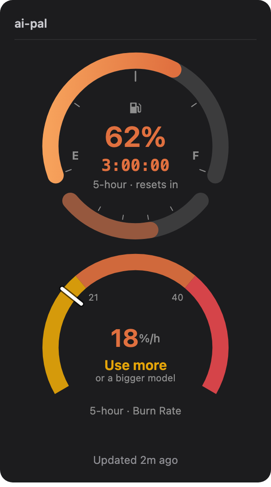
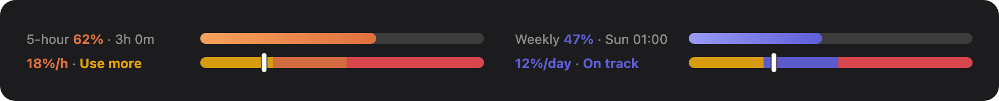

A Claude Code mod that shows how much of your Claude plan you have left, and nudges you before a reset throws it away.

A Claude plan meters usage in windows: one that resets every 5 hours, one weekly, and sometimes a weekly one per model. Whatever is left at a reset is lost. Claude warns you when you're close to a limit, but nothing told me when allowance I'd already paid for was about to go unused, or whether my pace would spend it. I found out afterwards, or never.
A pane docked beside each Claude Code session holds car-style dials, a fuel gauge and a speedometer for each usage window. The fuel gauge shows how much of the window is left, from E to F, with a clock counting down to its reset. The speedometer shows the burn rate: percent of the window spent per hour you actually spend working with Claude, in three equal zones for use more, on track and ease off. A setting swaps them for needle dials.
A band above the prompt keeps the same figures where you type: each window's allowance left, over a speed bar with the rate and the call.

When you've stepped away and a window still has enough left, a native notification arrives shortly before its reset. It says how much is left, how old the figure is, and whether coming back is worth it:
5-hour: 62% left as of 14:00, resets in 1h. Even nonstop, ~44% would go unused. Try a bigger model.
Nudges respect quiet hours, merge when two windows reset close together, and update themselves on every new reading. A single slash command, /ai-pal, shows and changes the thresholds and quiet hours.
TypeScript and TSX on Claude Code's mod API (function hooks), with no other dependencies.
Usage comes from the session's own figures and from the plan's usage endpoint on api.anthropic.com, polled every 5 minutes with back-off.
A shared store keeps one log for every open session. Nudges are native notifications, scheduled through the desktop app.
The dials and the band are SVG generated in code on the desktop, and plain text in the terminal.
Built test-first: 84 tests on Claude Code's plugin test kit, run against both surfaces.
It needs Claude Code 2.1.325 or newer and a Claude Pro or Max plan. At the prompt of a terminal session:
/plugin install ai-pal --marketplace hbfelizzola/ai-pal